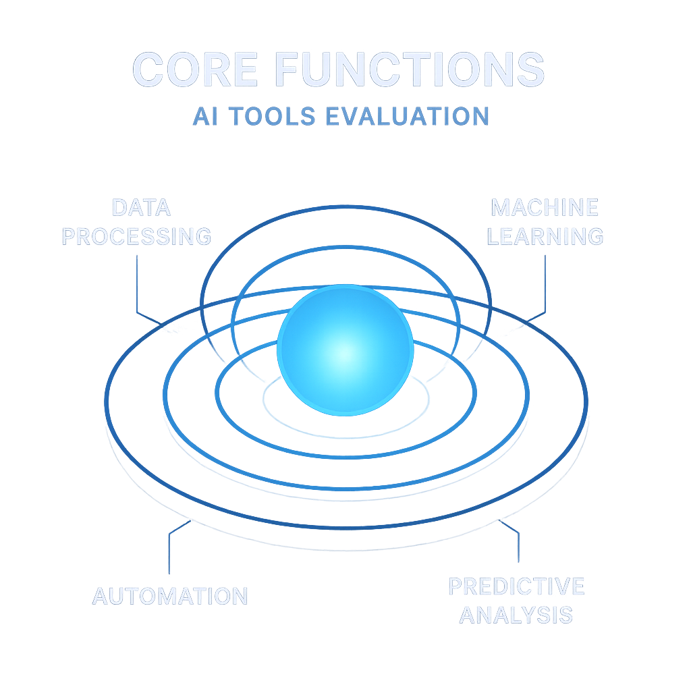
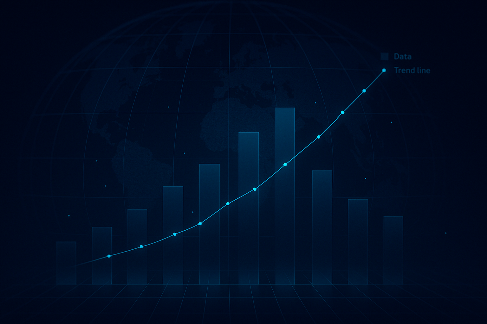
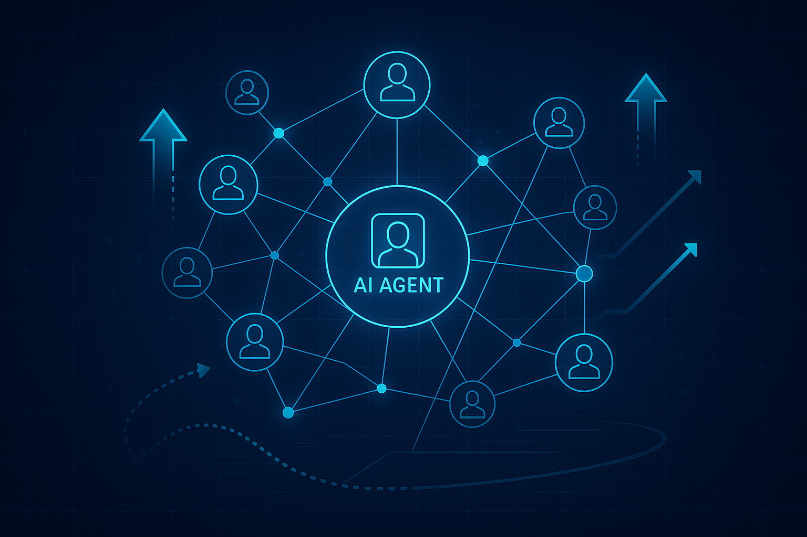
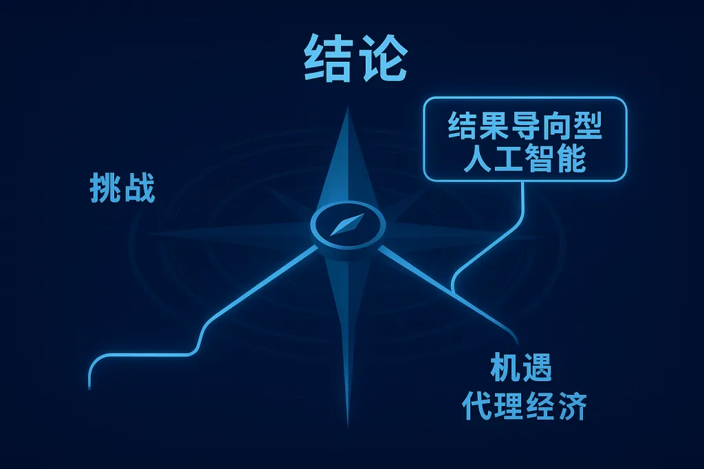
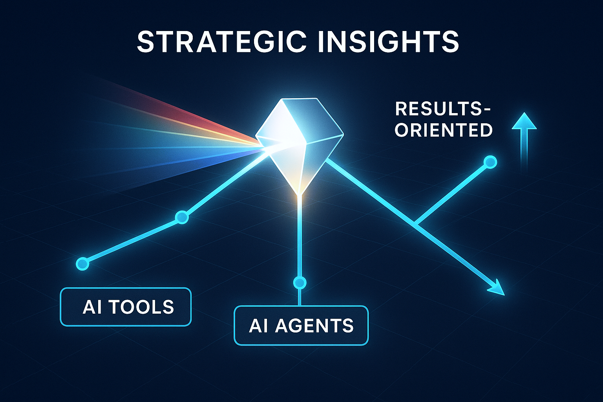

AI工具全面评估 / 市场趋势分析 / 未来发展建议
视界慧景
AI工具综合评估
核心竞争力分析
👆 点击展开详细内容
📋 引言
本旨在对最新研发的AI工具"视界慧景"进行全面评估，结合用户体验反馈、市场竞争格局及行业发展趋势，提出产品优缺点分析及未来发展建议...
✅ 产品优点

🎯 核心优势
- 功能覆盖面广
- 基础生成能力具备
- 界面设计简洁
- 尝试构建内容生态
⚠️ 产品缺点
🚨 主要问题
- 界面设计与科技感不足
- 核心功能缺乏亮点
- 模型能力单一且竞争力弱
- 用户体验与引导缺失
📈 市场趋势与竞争格局

🏢 行业巨头动态
- 全栈式AI能力布局
- 垂直领域深化专业化
- 用户体验与生态构建
- 技术迭代速度加快
💡 未来发展建议

🎯 核心建议
- 明确产品定位，深耕垂直场景
- 拥抱智能体（Agent）范式
- 创新商业模式探索
- 强化模型能力与创新
- 加强市场营销与用户沟通
🎯 结论

"视界慧景"展现广阔潜力，但面临定位模糊、竞争力不足等挑战。应聚焦打造结果型AI应用和智能体...
🎯 核心洞察
借鉴关于"AI是下一个操作系统"、"价值在于结果型AI应用"和"智能体经济崛起"的判断，应聚焦于打造能够交付最终价值的"结果型AI应用"和"智能体"，并以此为核心重构产品设计、商业模式和组织战略。同时，在中国市场，应创新盈利模式，探索"第二道钱"的收入来源。这将是在激烈AI市场中脱颖而出，并引领AI原生化转型的关键。